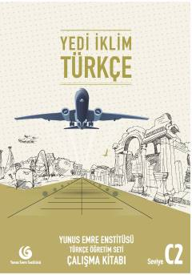

YİC2 darajasidagi turk tili o'rganuvchilar uchun mo'ljallangan amaliy mashqlar kitobi.
Ushbu qo'llanma Yunus Emre Enstitüsü tomonidan turk tilini chet tili sifatida C2 darajasida o'rganuvchilar uchun maxsus tayyorlangan ish daftridir. Kitob turk tilini mukammal o'zlashtirish, leksik va grammatik ko'nikmalarni mustahkamlash hamda kundalik va ilmiy muloqot ehtiyojlarini qondirishga qaratilgan.